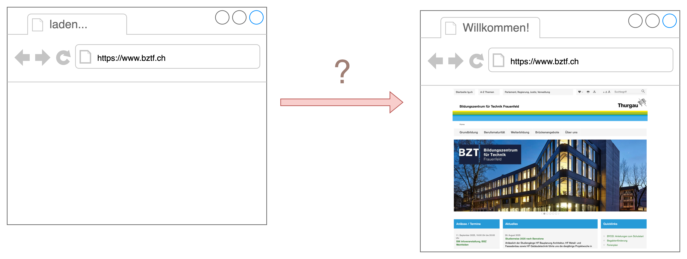
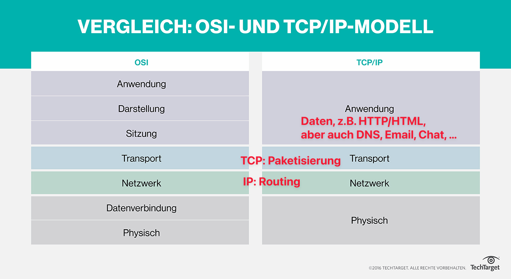
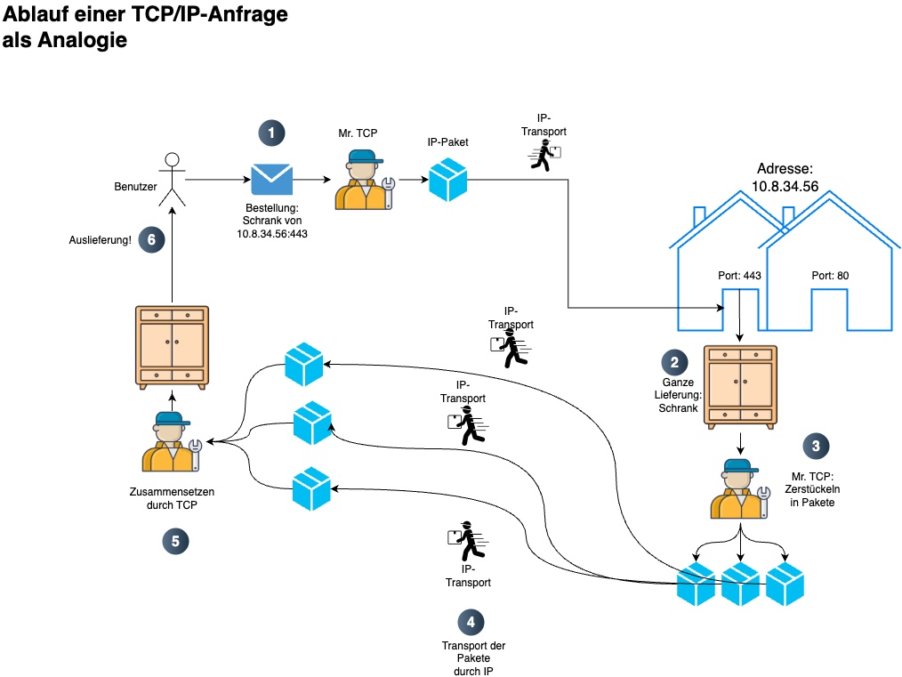

{% extends "../_base_template.html" %}
{% block title %}Lektion 3 - Netzwerk-Grundlagen{% endblock %}

{% block sections %}
<section data-markdown>
<textarea data-template>
# <i class="fas fa-graduation-cap"></i> M347 - Dienste mit Containern

Heutiges Ziel
--------------

**Netzwerk-Grundlagen für das Verständnis von Container-Diensten kennenlernen**

Sie lernen heute grundlegende Netzwerk-Begriffe kennen:

* Sie kennen die grundlegenden Begriffe rund um Netzwerk-Technologien
* Sie kennen die Begriffe "TCP", "IP", "TCP-Port", "DNS", "Hostname", "Router/Routing" und können diese grob erklären
* Sie wissen, wie Netzwerk-Dienste  und Clients über TCP/IP miteinander kommunizieren können

Diese Lektion ist wichtig für das Grundverständnis, wie Netzwerk-Verkehr funktioniert. Wir brauchen dieses Wissen, damit wir
begreifen, wie Container untereinander kommunizieren können.

</textarea>
</section>

<section data-markdown>
<textarea data-template>
# <i class="fas fa-graduation-cap"></i> M347 - Einstiegs-Quiz

**Leitfrage:**

**_Was muss (in Ihrem Computer und ausserhalb) alles für Kommunikation geschehen, damit Sie im Browser eine gewünschte Webseite angezeigt bekommen?_**



**Hands-On**

* Bilden Sie 2 Gruppen vor den abgegebenen Papier-Materialien
* Versuchen Sie, die Bilder/Icons, Begriffe und Vorgänge richtig anzuordnen und mit Pfeilen zu verbinden
* Erklären Sie den Ablauf, die Begriffe und Vorgänge!

(ca. 15min Aufbau, 15min Diskussion / Erklärung)


</textarea>
</section>

<section data-markdown>
<textarea data-template>
# <i class="fas fa-graduation-cap"></i> M347 - Zusammenfassung TCP/IP

<div class="d-flex gap-10 align-items-start">
	
	<div class="flex-grow-1 flex-basis-0 mt-20">

* Kommunikation von einem Client (z.B. Browser) zu einem Dienst (z.B. Web-Server) passiert über ein **Netzwerk** (z.B. Internet)

* Dies passiert über standardisierte **Protokolle** (abgemachte Art der Kommunikation), heute zu 99% über **TCP/IP**

* Daten werden dabei in **Pakete** zerstückelt und transportiert

* **TCP** sorgt für das Zerstückeln, Versenden und wieder Zusammensetzen von Paketen. Jeder Dienst bietet dazu einen
  **Eingang** (= **TCP-Port**) an.

* **IP** sorgt für das Versenden und Routen der Pakete durch das Netzwerk. Die **Ziel-Adresse** ist dabei
  die **IP-Adresse**.
	</div>
</div>

Kompliziert? ==> **Analogie auf der nächsten Seite!**


</textarea>
</section>

<section data-markdown>
<textarea data-template>
# <i class="fas fa-graduation-cap"></i> M347 - Analogie TCP/IP

Man kann sich den Netzwerk-Verkehr als Analogie aus dem realen Leben vorstellen:

<div class="d-flex gap-10 align-items-start">
	
	<div class="flex-basis-0 flex-grow-1 mt-20">

1. Bestellung wird von Benutzer versandt. Adresse ist eine IP und ein Port (= Haus + Tür-Nummer)

2. Bestellung wird vom Server bereitgestellt (Ganzes Datenpaket)

3. TCP zerstückelt das ganze Paket in kleine IP-Pakete

4. IP transportiert dies über das Netzwerk (Routing etc.)

5. zurück beim Benutzer setzt TCP die Einzelteile wieder zusammen

6. ... und liefert das fertige Datenpaket an den Benutzer!
	</div>
</div>

</textarea>
</section>

<section data-markdown>
<textarea data-template>
# <i class="fas fa-flask"></i> M347 - Übungen

Lösen der Netzwerk-Übungen auf Moodle

</textarea>
</section>
{% endblock %}